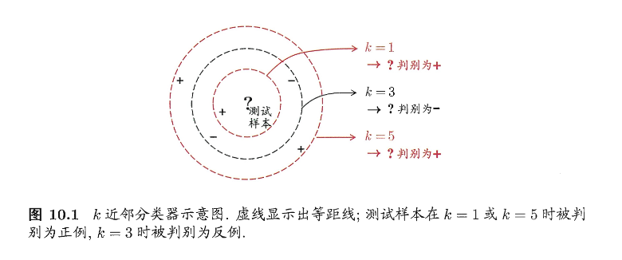
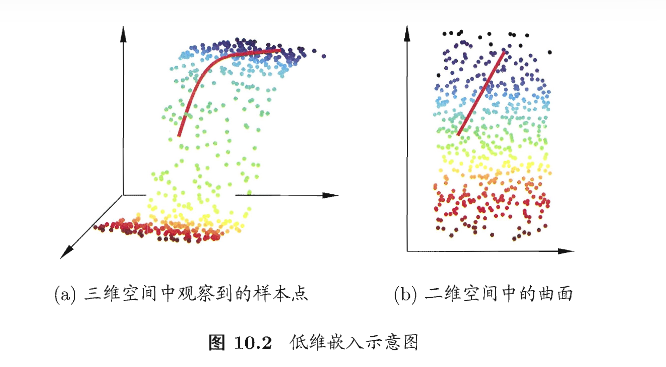
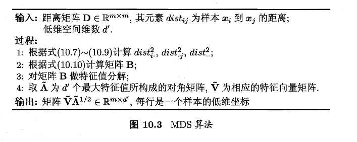
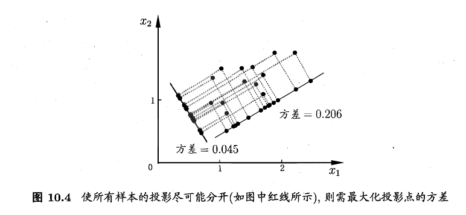
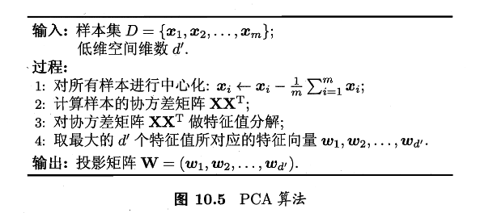
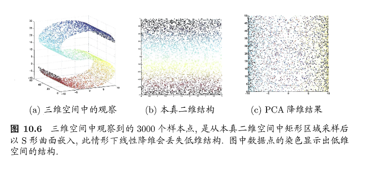
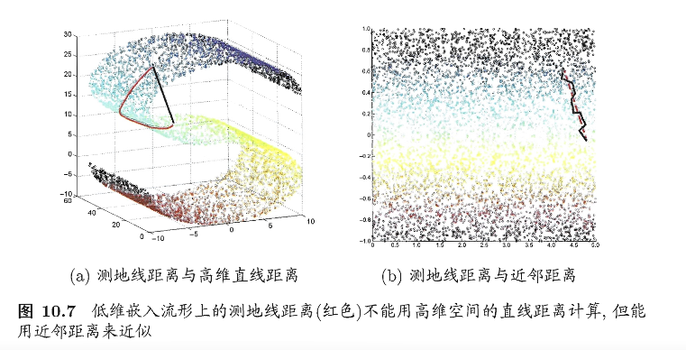
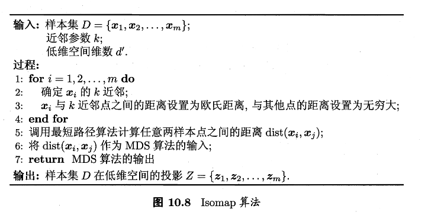
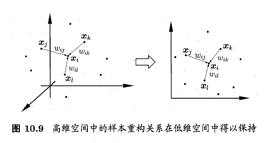
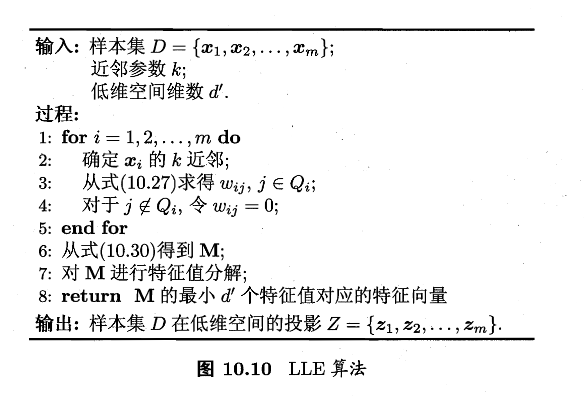

第十章 降维与度量学习
第十章 降维与度量学习
降维比较好解释，将高维数据（比较多的特征）映射到低维，同时尽量保留有用的结构。用数学语言描述就是：
降维是在学一个“表示/坐标系” \(z=f(x)\)
度量学习则是通过一定的算法，让该近的更近，该远的更远。比方说原本的距离度量用的是欧氏距离，即 \(d(x,y)=||x-y||_2\) ,而度量学习会学得一个更适合任务的距离，比如 Mahalanobis 距离： \(d_M(x,y)=\sqrt{(x-y)\top M (x-y)}，M\succeq0\)，其中 \(M\) 控制不同特征的不同权重，允许特征之间相关性影响距离
\(k\) 近邻学习
首先介绍一下 \(k\) 近邻学习：\(k\) 近邻(kNN)是一类典型的基于实例的监督学习方法：
- 给定测试样本，先选一个距离度量（欧氏距离/余弦距离/马氏距离等）
- 在训练集里找离 \(x\) 最近的 \(k\) 个样本
之前学的很多模型，如线性回归、SVM、神经网络等，都有一个明显的训练阶段，用于训练参数 \(\theta\)
但 kNN 几乎不训练，它的训练阶段基本就是把数据存储起来，所以 kNN 也被称为懒惰学习：训练开销低，预测时开销高
如下图所展示的，不同的 \(k\) 会导致不同的分类

- 当 k=1 的时候，只看到最近的 1 个点，容易受到噪声的影响，但时边界比较灵活
- 当 k=3 的时候，看 3 个邻居，多数投票可能反转结果
- 当 k=5 的时候，更加平滑也更稳定，但是可能抹掉了局部细节
总的来说，kNN的基本过程就是：距离度量 + \(k\) 选择 \(\rightarrow\) 邻居集合 \(\rightarrow\) 投票/平均 \(\rightarrow\) 预测结果
接下来我们理论分析一下 1NN(最近邻分类器) 的泛化错误率如何：
设测试样本为 \(x\) ,其最近邻训练样本为 \(z\) 。当 \(x\) 的真实类别和 \(z\) 的类别不一致的时候，我们给出
\(\sum_cP(c\mid x)P(c\mid z)\) 表示“x和z在同一类别上的概率一致性”，一致性越大，出错越小
假设样本独立同分布，并且对任意 \(x\) 和任意小的 \(\delta\)，在 \(x\) 附近总能找到训练样本。于是最近邻 \(z\) 会非常接近 \(x\)，那么从概率上就可以近似认为 \(P(c\mid z)\approx P(c\mid x)\)，那么我们把此式带回式(10.1)，可得
接下来我们令 \(\displaystyle c^*=\arg\max_{c\in\mathcal{Y}}P(c\mid x)\) 来表示贝叶斯最优分类器在 \(x\) 处选择的类别（也就是后验概率最大的类）。然后继续推导上式
\(1-P(c^*\mid x)\) 是 贝叶斯最优分类器在点 \(x\) 处的错误概率
所以此式意味着：1NN 的泛化错误率不超过贝叶斯最优错误率的 2 倍
低维嵌入
上一节中我们发现 1NN 在可以接受的范围内，获得了巨大的效率提升，但这取决于我们的一个前提假设：我们假设在 \(x\) 附近总能找到训练样本且最近邻 \(z\) 和 \(x\) 非常接近。这个假设在现实情况下是较难实现的，我们举个例子如下：
- 维度 \(d=1\) 的时候，\(\delta=0.001\) 这种邻域，采样 1000 个点均匀铺开，还算可以覆盖
- 但维度 \(d=20\) 的时候， 要在每个维度达到 \(\delta=0.001\) 的粒度，粗略需要 \({(10^3)}^{20}=10^{60}\) 的量级
这就是常见学习算法都会遇到的问题：样本在高维空间变稀疏，即便是最近邻也会很远；距离计算变得很困难，不可靠。即所谓的 维数灾难
解决
解决方案一般是降维或低维嵌入，让数据在更合适的子空间里变密集，如下图所示的过程

这里将一个比较经典的方法——MDS（多维缩放），其目标是低维里尽量保持原始距离。
它的设定简单来说为：原始先给出原空间的两两距离矩阵，再计算出一个低维坐标，使得低维欧式距离尽量复现原距离
我们假设有 \(m\) 个样本，原始距离矩阵为 \(D\in\mathbb{R}^{m\times m}\) 其中， \(D_{ij}=dist_{ij}=样本 x_i 到 x_j 的距离\) 。我们的目标是寻找低维表示 \(Z\in\mathbb{R}^{d’\times m},d’\le d\)，并满足 \(||z_i-z_j||=dist_{ij}\)。下面是推导过程：
用内积矩阵把距离转换成坐标
我们令低维内积矩阵为 \(B=Z^{T} Z\in \mathbb{R}^{m\times m},b_{ij}=z_i^T z_j\) ，然后欧式距离展开，可以得到
Note
这一步是将“两个点的欧式距离”改写为“点的长度+点之间的相似度”：
\(b_{ii}=||z_i||^2\) 表示点 \(i\) 离原点有多远；\(b_{ij}=z_i^Tz_j\) 表示点 \(i\) 和点 \(j\) 在方向上有多对齐（相似度）
然后整理公式，令 \(Z\) 中心化，即 \(\sum_{i=1}^mz_i=0\)，这会让 \(B\) 的行/列和为 0 ，进而整理得到便于讨论的式子,其中 \(\text{tr}(\cdot)\) 是迹，\(\text{tr}(B)=\sum_{i=1}^m||z_i||^2\)
Note
刚刚式(10.3)中存在未知的 \(b_{ii}\) 等内容，但是我们只有距离 \(dist_{ij}\) 的预测值，那么怎么解呢？给出的办法是对 \(i\) 和 \(j\) 求和/全体求和，利用中心化带来的行列和为0，把未知项消去。
以式(10.4)为例，它意味着：固定 \(j\) ，把所有点到 \(j\) 的距离平方加起来，等价于 “总能量 \(\text{tr}(B)\)+\(j\) 点的长度项\(mb_{jj}\)“。可以认为是：距离的列求和=你能推回每个点的 \(||z_j||^2\)
这三个式子合起来意味着：用求和把未知的自内积项和全局常数变成可由距离算到的量
接下来定义三个平均距离平方，如下
Note
这三个按顺序分别是行平均、列平均和全局平均
它们是为了把式(10.4)-(10.6)的求和结果写得更加紧凑，最终塞进(10.10)形成一个直接可算得闭式公式
然后把式（10.4）~（10.9）带入式（10.3），得到从距离直接回复内积矩阵元素的公式
Note
这里在做双中心化操作：去掉行均值、列均值，再加回总体均值。效果为：
- 把距离平方矩阵里的”平移影响“去掉（因为你只知道距离，不知道坐标原点的位置）
- 得到一个与某组中心化坐标Z相一致的Gram矩阵 \(B=Z^TZ\)
直观上来说，距离告诉你相隔多远，这个式子把距离转化为了”在低维空间中有多相似“
将内积矩阵B进行特征分解，恢复坐标Z
对 \(B\) 做特征分解： \(B = V \Lambda V^{T}\) 取非零特征值的那一部分（即假设有 \(d^*\) 个非零特征值），令 \(\Lambda=\text{diag}(\lambda_1,\lambda_2,\dots,\lambda_d)\) 、\(V_*\) 为对应特征向量矩阵，则
Note
如果这些距离真的是某个欧式空间中产生的（噪声很小，没有冲突），那么：
- \(B=V\Lambda V^T\) 的特征分解相当于找到了坐标轴（特征向量）
- 特征值 \(\lambda\) 给出每个轴的“尺度/方差”(\(\sqrt{\lambda}\) 是长度尺度）
- 只取非零特征值那部分，就能恢复出一组坐标 \(Z\)，使得 \(Z^T Z=B\)
式(10.10)把距离变成内积，式(10.11)把内积变为坐标
不过实际中不必严格相等，取最大的 \(d’\) 个特征值对应的部分降到更低维，可以得到
Note
实际距离往往不可能被低维完全满足（噪声、非欧式结构、维度不够），那就：
- 只取最大的 \(d'\) 个特征值/特征向量
- 得到最能保留整体结构的低维表示
如下算法及其对应代码

import numpy as np
def classical_mds(D, d_prime=2, eps=1e-12):
"""
经典 MDS（Classical MDS）
输入:
D: (m, m) 距离矩阵，D[i, j] = dist(x_i, x_j)，要求对称、对角为0
d_prime: 目标降维维度 d'
eps: 数值稳定用的小阈值
输出:
Z: (m, d') 低维坐标矩阵，每一行是一个样本在低维空间的坐标
eigvals: 选取的前 d' 个特征值（从大到小）
"""
D = np.asarray(D, dtype=float)
m = D.shape[0]
assert D.shape == (m, m), "D 必须是方阵 (m, m)"
# 1) 距离平方矩阵：D2[i,j] = dist_ij^2
D2 = D ** 2
# 2) 双中心化（对应教材(10.10)的效果）
# B = -1/2 * J * D2 * J
# 其中 J = I - (1/m) * 11^T 是中心化矩阵
I = np.eye(m)
one = np.ones((m, 1))
J = I - (one @ one.T) / m
B = -0.5 * J @ D2 @ J
# 3) B 是对称矩阵，用 eigh（专门处理对称/厄米矩阵）更稳
# eigvals 升序，eigvecs 列为特征向量
eigvals, eigvecs = np.linalg.eigh(B)
# 4) 按特征值从大到小排序
idx = np.argsort(eigvals)[::-1]
eigvals = eigvals[idx]
eigvecs = eigvecs[:, idx]
# 5) 取前 d' 个“非负”特征值（理论上 B 半正定；数值误差可能出现微小负数）
# Z = V_{d'} * sqrt(Lambda_{d'})，输出 shape (m, d')
eigvals_top = eigvals[:d_prime]
eigvecs_top = eigvecs[:, :d_prime]
# 将小于 0 的特征值截断为 0（避免 sqrt 出现 nan）
eigvals_top_clipped = np.maximum(eigvals_top, 0.0)
# 低维坐标：每列缩放对应特征向量
Z = eigvecs_top * np.sqrt(eigvals_top_clipped + eps)
return Z, eigvals_top
# ========== 示例 ==========
if __name__ == "__main__":
# 构造 4 个点的距离矩阵（例子随便写的）
D = np.array([
[0, 1, 2, 2],
[1, 0, 1, 2],
[2, 1, 0, 1],
[2, 2, 1, 0],
], dtype=float)
Z, lam = classical_mds(D, d_prime=2)
print("前两个特征值:", lam)
print("二维坐标 Z:\n", Z)
接下来我们把得到低维子空间统一成线性形式，如下
其中 \(X\in \mathbb{R}^{d\times m}\) 是原始样本矩阵，\(W\in\mathbb{R}^{d\times d'}\) 是变换矩阵。若 \(W\) 的列向量正交，就是正交变换；\(Z\) 的每一列就是样本在新坐标系下的表示
而下一节的重点就在于变换矩阵 \(W\) 上，研究对 \(W\) 加不同目标/约束可以产生哪些线性降维方法的差异
主成分分析PCA
接下来我们将降维这个思想推进到一个更加常用、更加可计算的具体方法，即PCA。
先考虑这样一个问题：对于一个正交属性空间中的样本点，如何用一个超平面对所有样本进行恰当表达？
这个超平面应当满足这些性质：
- 最近重构性：样本点到这个超平面的距离都足够近
- 最大可分性：样本点在这个超平面上的投影能尽可能分开
接下来我们把这两个性质作为我们推导的目的，开始计算
从最近重构推到PCA目标
我们假定数据样本进行了中心化，即 \(\sum_ix_i=0\)，取一组标准正交基组成投影矩阵 \(W=[w_1,w_2,\dots,w_d]\)，满足 \(W^TW=I\)，我们令样本 \(x_i\) 在低维空间的坐标是 \(z_i=W^Tx_i\)，重构回原空间是 \(\hat x_i=Wz_i=WW^Tx_i\)，也就是说
于是我们可以简单计算原样本点 \(x_i\) 与基于投影重构的样本点 \(\hat x_i\) 之间的距离为
Note
此式左边是 所有样本的平方重构误差。式(10.14)表明：在正交约束下，最小化重构误差等价于 最大投影化后捕获到的能量
数学直觉来说：你投影到某个子空间，能解释的数据能量越多，丢掉的能量越少，重构就越准
然后根据我们的目标，最近重构性，那么应该让式(10.14)最小，由于 \(w_j\) 是标准正交基，\(\sum_ix_ix_i^T\) 是协方差矩阵，那么有
Note
在所有 \(d’\) 维正交子空间中，找一个让投影能量中最大（也就是重构误差最小）的子空间
从最大可分性推到PCA目标
我们知道样本点 \(x_i\) 在新空间中超平面上的投影是 \(W^Tx_i\) ，若所有样本点的投影尽可能分开，那么应该让投影后样本点的方差最大化，如下图

由于投影后样本点的方差是 \(\sum_iW^Tx_ix_i^TW\) ,那么我们的优化目标可以写为
Note
投影后样本的方差（散布程度）由协方差决定，trace可以理解为“各投影轴上方差的总和”
式(10.16)就是在找投影后最分散的 \(d’\) 维子空间——点拉得开，信息更集中在少数维里
解方程及算法
很容易知道，式(10.15)与式(10.16)等价，对这两个式子使用拉格朗日乘子法可得
Note
最优的 \(W\) 的列向量就是协方差矩阵（或 \(XX^T\) ）的特征向量，\(\Lambda\) 的对角元素是对应特征值
然后按照特征值从大到小取前 \(d’\) 个特征向量（也就是选择维度，下面会介绍别的方法），就得到主成分方向
- 特征值 \(\lambda_k\)：第 \(k\) 个主成分方向上“解释的方差/能量”
- 特征向量 \(w_k\)：那条方向

然后对于维度的选择，我们可以换个方式，可以从重构的角度设置一个重构阈值，例如 \(t=95\%\) ,然后选取使下式成立的最小 \(d’\) 值：
Note
总方差看作信息总量，前 \(d’\) 个主成分解释的比例至少要达到 \(t\)
import numpy as np
def pca(X, d_out=None, var_ratio=None):
"""
PCA（主成分分析）
输入:
X: (m, d) numpy数组，m个样本、d维特征（行=样本）
d_out: 目标降到的维度 d'（二选一；优先使用d_out）
var_ratio: 解释方差阈值t（如0.95），自动选最小d'
输出:
Z: (m, d') 降维后的表示（投影坐标）
W: (d, d') 投影矩阵（列为主成分方向）
mu: (d,) 均值向量（用于对新样本做同样中心化）
eigvals: (d,) 按降序排列的特征值（方差大小）
"""
X = np.asarray(X, dtype=float)
m, d = X.shape
# 1) 中心化
mu = X.mean(axis=0)
Xc = X - mu
# 2) 协方差矩阵（对称）
C = (Xc.T @ Xc) / max(m - 1, 1)
# 3) 特征分解（对称矩阵用eigh更稳）
eigvals, eigvecs = np.linalg.eigh(C) # 升序
idx = np.argsort(eigvals)[::-1] # 改为降序
eigvals, eigvecs = eigvals[idx], eigvecs[:, idx] # eigvecs列对应特征值
# 4) 选择降维维度 d'
if d_out is None:
if var_ratio is None:
d_out = d # 不指定则不降维
else:
total = eigvals.sum()
if total <= 0:
d_out = 1
else:
cum = np.cumsum(eigvals) / total
d_out = int(np.searchsorted(cum, var_ratio) + 1)
d_out = int(np.clip(d_out, 1, d))
# 5) 投影：W为前d'个主成分，Z为低维坐标
W = eigvecs[:, :d_out]
Z = Xc @ W
return Z, W, mu, eigvals
# ====== demo ======
if __name__ == "__main__":
X = np.array([[2, 0], [0, 1], [3, 1], [4, 2]], dtype=float)
Z, W, mu, eigvals = pca(X, d_out=1) # 降到1维
print("Z=\n", Z)
print("W=\n", W)
print("mu=", mu)
print("eigvals=", eigvals)
Tip
梳理一下到此为止的思路：
我们先是在 \(k\) 近邻学习中讨论 1NN的上界，不过需要dense sample。
而高维情况下的densen sample是不现实的，距离和近邻并不可靠，于是我们要做低维嵌入/降维，让样本在低维中更密、距离更有意义；
然后我们介绍了MDS算法，即从距离矩阵出发保持距离，得到计算式用来映射；
但MDS的映射可能会在某种情况下强化噪声，于是有PCA的“从原始特征出发做线性投影”，并给出可计算、稳健的选子空间原则，也就是按照合理的方法删除一些比较小特征值的方向
但是：
现实里的数据常在“弯曲的低维结构上”，线性投影会把结构破坏（可以见图10.6）。那么我们该如何解决呢？
核化线性降维(KPCA)

从数学的角度来看，PCA假设高维到低维的映射是线性的，也就是又找了一个线性子空间。然是如果数据再高维里呈现 S 形曲面（这个本质叫做二维流形，下一节的内容），线性投影就会把折叠的结构压到一起，导致本来相近/相远的关系被破坏。于是提出了此方案，目的是：用非线性映射把它展开，再做PCA
假定我们将在高维特征空间中把数据投影到由 W 确定的超平面上，即 PCA 欲求解
Note
这里 \(z_i\) 不是指原始 \(x_i\)，是它在更高维特征空间中的表示，后续写为 \(\phi(x_i)\)
此式意味着：PCA的本质仍然是对“协方差做特征分解“，只不过把它搬到了一个可能是高维甚至无限维的空间里
那么最优方向 W 落在样本张成的子空间应该为
如果我们考虑把 \(z_i\) 给替换为映射形式，那么可以写为
Note
最优投影方向W可以写成训练样本在特征空间表示的线性组合。这一步让我们后续只需要样本之间的内积，不需要显式写出W的坐标
接下来我们用映射 \(\phi\) 把 \(z_i\) 改写为 \(\phi(x_i)\)
Note
明确“非线性”的来源：先用 \(\phi\) 把数据送去高维，再在高维空间做线性 PCA
但是，式(10.21)和式(10.22)存在一个问题：我们可能并不知道 \(\phi\) 的显式表达，该怎么解决呢？
在第六章的支持向量机中我们介绍了核函数，一个用来绕过高维映射计算，转而算内积的方法。这里同样适用
先引入核函数
Note
核技巧的核心内容，只要能计算 \(\kappa\)，就等价于在某个高维空间里做内积
基于式(10.23)带来的核函数，我们可以重构式(10.21)，也就是变为核矩阵的特征分解
Note
这里的 \(K\) 为 \(\kappa\) 对应的核矩阵，\(K_{ij}=\kappa(x_i,x_j)\)，\(A=(\alpha_1,\dots,\alpha_m)\)
KPCA 的训练阶段就是：构造核矩阵 \(K\) ，然后做特征分解，取最大的 \(d’\) 个特征值对应的特征向量(PCA的取最大特征值方向一样)
那么我们通过核矩阵的特征分解，获得了新的样本 \(x\) ,那么如何投影呢？我们只需要它与所有训练样本的核值就可以了
投影后第 \(j\) 维坐标为：
Note
\(\alpha_i\) 已经过规范化，\(\alpha_i^j\) 是 \(\alpha_i\) 的第 \(j\) 个分量
此式意味着：新点的第 \(j\) 维低维坐标，等于“它和每个训练点的相似度”做加权加和
不过这也解释了计算代价：每多出一个新样本，就要算它与全部训练样本的核(m次)，所以KPCA在大样本下开销很大
import numpy as np
# 之前的MDS
def classical_mds(D, d_prime=2, eps=1e-12):
"""
经典 MDS（Classical MDS）
输入:
D: (m, m) 距离矩阵，D[i, j] = dist(x_i, x_j)，要求对称、对角为0
d_prime: 目标降维维度 d'
eps: 数值稳定用的小阈值
输出:
Z: (m, d') 低维坐标矩阵，每一行是一个样本在低维空间的坐标
eigvals: 选取的前 d' 个特征值（从大到小）
"""
D = np.asarray(D, dtype=float)
m = D.shape[0]
assert D.shape == (m, m), "D 必须是方阵 (m, m)"
D2 = D ** 2
I = np.eye(m)
one = np.ones((m, 1))
J = I - (one @ one.T) / m
B = -0.5 * J @ D2 @ J
eigvals, eigvecs = np.linalg.eigh(B)
idx = np.argsort(eigvals)[::-1]
eigvals = eigvals[idx]
eigvecs = eigvecs[:, idx]
eigvals_top = eigvals[:d_prime]
eigvecs_top = eigvecs[:, :d_prime]
eigvals_top_clipped = np.maximum(eigvals_top, 0.0)
Z = eigvecs_top * np.sqrt(eigvals_top_clipped + eps)
return Z, eigvals_top
# =========================
# 工具：两两欧氏距离矩阵
# =========================
def pairwise_dist(X):
"""输入 X:(m,d)，输出 D:(m,m) 欧氏距离矩阵"""
X = np.asarray(X, dtype=float)
G = X @ X.T
sq = np.diag(G)
D2 = sq[:, None] + sq[None, :] - 2.0 * G
D2 = np.maximum(D2, 0.0)
return np.sqrt(D2)
# =========================
# 1) KPCA（核PCA）
# =========================
def kpca(X, d_prime=2, kernel="rbf", gamma=None, degree=3, coef0=1.0, eps=1e-12):
"""
KPCA（Kernel PCA）
输入:
X: (m,d) 样本矩阵（行=样本）
d_prime: 目标维度
kernel: "rbf" | "poly" | "linear"
gamma: RBF/poly 的系数；None 时默认 1/d
degree, coef0: poly 核参数
eps: 数值稳定
输出:
Z: (m,d') 训练样本的低维坐标
model: dict，用于对新样本做投影（包含 X_train、alpha、eigvals、核参数等）
"""
X = np.asarray(X, dtype=float)
m, d = X.shape
if gamma is None:
gamma = 1.0 / max(d, 1)
# 1) 构造核矩阵 K
if kernel == "linear":
K = X @ X.T
elif kernel == "poly":
K = (gamma * (X @ X.T) + coef0) ** degree
elif kernel == "rbf":
D = pairwise_dist(X)
K = np.exp(-(gamma * (D ** 2)))
else:
raise ValueError("kernel 仅支持: 'rbf' | 'poly' | 'linear'")
# 2) 中心化核矩阵：Kc = J K J
one = np.ones((m, 1))
J = np.eye(m) - (one @ one.T) / m
Kc = J @ K @ J
# 3) 特征分解（对称）
eigvals, eigvecs = np.linalg.eigh(Kc)
idx = np.argsort(eigvals)[::-1]
eigvals, eigvecs = eigvals[idx], eigvecs[:, idx]
# 4) 取前 d' 个（截断非正特征值）
eigvals_top = eigvals[:d_prime]
eigvecs_top = eigvecs[:, :d_prime]
eigvals_top = np.maximum(eigvals_top, 0.0)
# 5) 归一化 alpha：alpha_j = v_j / sqrt(lambda_j)
# 这样新样本投影：z_j(x)=sum_i alpha_ij * k(x_i, x)（对应教材(10.25)）
denom = np.sqrt(eigvals_top + eps)
alpha = eigvecs_top / denom[None, :]
# 6) 训练样本坐标：Z = Kc @ alpha
Z = Kc @ alpha
model = {
"X_train": X,
"kernel": kernel,
"gamma": gamma,
"degree": degree,
"coef0": coef0,
"alpha": alpha, # (m,d')
"eigvals": eigvals_top, # (d',)
"K_row_mean": K.mean(axis=1), # 用于中心化新样本核向量
"K_all_mean": K.mean(), # 用于中心化新样本核向量
}
return Z, model
def kpca_transform(X_new, model):
"""
KPCA 对新样本投影
输入:
X_new: (n,d) 新样本
model: kpca 返回的 model
输出:
Z_new: (n,d') 新样本低维坐标
"""
X_new = np.asarray(X_new, dtype=float)
Xtr = model["X_train"]
kernel = model["kernel"]
gamma = model["gamma"]
degree = model["degree"]
coef0 = model["coef0"]
alpha = model["alpha"]
# 1) 计算 K_new: (n,m)
if kernel == "linear":
K_new = X_new @ Xtr.T
elif kernel == "poly":
K_new = (gamma * (X_new @ Xtr.T) + coef0) ** degree
elif kernel == "rbf":
# 欧氏距离：||a-b||^2 = a^2 + b^2 -2ab
A2 = np.sum(X_new**2, axis=1)[:, None]
B2 = np.sum(Xtr**2, axis=1)[None, :]
D2 = np.maximum(A2 + B2 - 2.0 * (X_new @ Xtr.T), 0.0)
K_new = np.exp(-gamma * D2)
else:
raise ValueError("bad kernel")
# 2) 中心化新样本核向量（与训练时 Kc=J K J 一致）
# k_c(x,·) = k(x,·) - mean_row(·) - mean(k(x,·)) + mean_all
row_mean = model["K_row_mean"][None, :] # (1,m)
all_mean = model["K_all_mean"]
new_mean = K_new.mean(axis=1, keepdims=True) # (n,1)
K_new_c = K_new - row_mean - new_mean + all_mean
# 3) 投影：Z = K_new_c @ alpha
return K_new_c @ alpha
if __name__ == "__main__":
rng = np.random.default_rng(0)
X = rng.normal(size=(200, 5))
Z_kpca, model = kpca(X, d_prime=2, kernel="rbf", gamma=0.5)
print(Z_kpca.shape)
流形学习
流形学习同样是一种降维方法，这一节的核心假设是：数据落在一个低维“流形”上——局部 近似欧式空间，所以局部距离/线性关系可靠；但 全局 直线距离不可靠。本节主要就是解决此问题
Note
流形 在局部看起来像欧式空间的空间。或者说：当你站的足够近，它就像一个普通平面，但拉远看会发现很弯曲，带入地球想一下就行

这里先介绍 等度量映射方法(Isomap),其核心思想就是用测地线距离代替直线距离，再用MDS
如上图所示，它的红线是曲面上的最短路径（测地线）。高维中的直线距离会低估它
换个说法，我们是无法做到直接穿过空间内部计算两点间的直线距离的，因为这个直线不存在于空间中，必须走红线测量
然后就是计算测地线距离了，Isomap的做法如下图

不过Isomap仅仅得到了训练样本子低维空间的坐标，对于新样本，目前采取的措施是：将训练样本的高维空间坐标作为输入、低维空间作为输出，训练一个回归学习器来对新样本的低维空间坐标做预测
import numpy as np
# 之前的MDS
def classical_mds(D, d_prime=2, eps=1e-12):
"""
经典 MDS（Classical MDS）
输入:
D: (m, m) 距离矩阵，D[i, j] = dist(x_i, x_j)，要求对称、对角为0
d_prime: 目标降维维度 d'
eps: 数值稳定用的小阈值
输出:
Z: (m, d') 低维坐标矩阵，每一行是一个样本在低维空间的坐标
eigvals: 选取的前 d' 个特征值（从大到小）
"""
D = np.asarray(D, dtype=float)
m = D.shape[0]
assert D.shape == (m, m), "D 必须是方阵 (m, m)"
D2 = D ** 2
I = np.eye(m)
one = np.ones((m, 1))
J = I - (one @ one.T) / m
B = -0.5 * J @ D2 @ J
eigvals, eigvecs = np.linalg.eigh(B)
idx = np.argsort(eigvals)[::-1]
eigvals = eigvals[idx]
eigvecs = eigvecs[:, idx]
eigvals_top = eigvals[:d_prime]
eigvecs_top = eigvecs[:, :d_prime]
eigvals_top_clipped = np.maximum(eigvals_top, 0.0)
Z = eigvecs_top * np.sqrt(eigvals_top_clipped + eps)
return Z, eigvals_top
# =========================
# 工具：两两欧氏距离矩阵
# =========================
def pairwise_dist(X):
"""输入 X:(m,d)，输出 D:(m,m) 欧氏距离矩阵"""
X = np.asarray(X, dtype=float)
G = X @ X.T
sq = np.diag(G)
D2 = sq[:, None] + sq[None, :] - 2.0 * G
D2 = np.maximum(D2, 0.0)
return np.sqrt(D2)
def isomap(X, k=10, d_prime=2):
"""
Isomap
输入:
X: (m,d) 样本矩阵
k: 近邻数
d_prime: 目标维度
输出:
Z: (m,d') 低维坐标（用 MDS 得到）
D_geo: (m,m) 近似测地线距离（图最短路距离）
"""
X = np.asarray(X, dtype=float)
m = X.shape[0]
D = pairwise_dist(X)
# 1) 构造 kNN 图的邻接矩阵（非邻居设为 inf）
G = np.full((m, m), np.inf)
np.fill_diagonal(G, 0.0)
for i in range(m):
nn = np.argsort(D[i])[1:k+1] # 排除自己
G[i, nn] = D[i, nn]
# 无向化（常见做法：取 min）
G = np.minimum(G, G.T)
# 2) Floyd-Warshall 求所有点对最短路（测地线近似）
D_geo = G.copy()
for t in range(m):
# 利用广播加速：D[i,j] = min(D[i,j], D[i,t]+D[t,j])
D_geo = np.minimum(D_geo, D_geo[:, [t]] + D_geo[[t], :])
# 3) 用 MDS 将测地线距离嵌入到低维
Z, _ = classical_mds(D_geo, d_prime=d_prime)
return Z, D_geo
# =========================
# 简短用法示例
# =========================
if __name__ == "__main__":
rng = np.random.default_rng(0)
X = rng.normal(size=(200, 5))
Z_iso, D_geo = isomap(X, k=10, d_prime=2)
print( Z_iso.shape)

接下来介绍 局部线性嵌入（LLE） 方法，它的核心思想是追求局部几何关系在低维也保持
如上图，假定样本点 \(x_i\) 的坐标能通过它的邻域样本 \(x_j,x_k,x_l\) 的坐标通过线性组合而重构出来，即
LLE 希望式(10.26)的关系在低维空间中也可以保持
Note
点 \(x_i\) 可以由它的邻居点线性组合重构，这符合流形的“在小邻近域里近似成立”
下面是计算过程，我们先为每个样本 \(x_i\) 找到其近邻下标集合 \(Q_i\) ，然后计算出基于 \(Q_i\) 中的样本点对 \(x_i\) 进行线性重构的系数 \(w_i\)，也就是在高维里求重构权重
接下来，由于 \(x_i\) 和 \(x_j\) 均为已知，令 \(C_{jk}=(x_i-x_j)^T(x_i-x_k)\),则 \(w_{ij}\) 有闭式解
然后按照我们的想法，在低维种保持同样的重构权重，解答低维坐标 \(z_i\)
对比式(10.27)和式(10.29)，我们发现，式(10.27)中 \(w_i\) 未知，式(10.29)中 \(x_i\) 对应的低维空间坐标 \(z_i\) 未知，我们尝试解答
令 \(Z=(z_1,z_2,\dots,z_m)\in\mathbb{R}^{d'\times m}\) ，\(W_{ij}=w_{ij}\)，我们把所有点的局部重构误差组织成一个二次型，方便写为trace形式并用特征分解求解
进而将式(10.29)通过trace形式+约束，重写为特征值问题
Note
这里是标准的“在正交约束下最小化二次型”，解就是取 M 的最小的 d' 个特征值对应的特征向量

import numpy as np
# =========================
# 工具：两两欧氏距离矩阵
# =========================
def pairwise_dist(X):
"""输入 X:(m,d)，输出 D:(m,m) 欧氏距离矩阵"""
X = np.asarray(X, dtype=float)
G = X @ X.T
sq = np.diag(G)
D2 = sq[:, None] + sq[None, :] - 2.0 * G
D2 = np.maximum(D2, 0.0)
return np.sqrt(D2)
def lle(X, k=10, d_prime=2, reg=1e-3, eps=1e-12):
"""
LLE（Locally Linear Embedding）
输入:
X: (m,d) 样本矩阵
k: 近邻数
d_prime: 目标维度
reg: 求逆稳定项（对局部协方差加 reg*trace）
输出:
Z: (m,d') 低维坐标（每行一个样本）
W: (m,m) 权重矩阵（W[i,j]=w_ij；非邻居为0）
"""
X = np.asarray(X, dtype=float)
m, d = X.shape
D = pairwise_dist(X)
# 1) 找近邻并求权重（对应(10.27)(10.28)）
W = np.zeros((m, m), dtype=float)
for i in range(m):
nn = np.argsort(D[i])[1:k+1]
Xi = X[i]
Xn = X[nn] # (k,d)
Zloc = Xn - Xi # (k,d)
# 局部Gram矩阵 C = (x_i-x_j)^T (x_i-x_k) = Zloc Zloc^T
C = Zloc @ Zloc.T # (k,k)
# 正则化：避免奇异（reg * trace(C)）
tr = np.trace(C)
C = C + np.eye(k) * (reg * (tr if tr > eps else 1.0))
# 解 C w = 1，然后归一化使 sum(w)=1
ones = np.ones(k)
w = np.linalg.solve(C, ones)
w = w / (w.sum() + eps)
W[i, nn] = w
# 2) 构造 M = (I-W)^T(I-W)（对应(10.30)）
I = np.eye(m)
M = (I - W).T @ (I - W)
# 3) 解最小特征值对应的特征向量（对应(10.31)）
eigvals, eigvecs = np.linalg.eigh(M) # 升序
# 跳过最小的一个（理论上为0，对应平移不变的常数向量）
Z = eigvecs[:, 1:d_prime+1]
return Z, W
if __name__ == "__main__":
rng = np.random.default_rng(0)
X = rng.normal(size=(200, 5))
Z_lle, W = lle(X, k=10, d_prime=2)
print(Z_lle.shape)
Tip
PCA/KPCA都在找全局投影方向，也就是线性或核化后的线性，偏全局结构
Isomap是先把距离改为近似测地线，再用MDS全局保持距离
LLE则不管全局距离，只保留局部线性重构关系，再拼出全局坐标
总而言之，这些都在对抗我们提到的维数灾难，努力让数据在低维里结构更清晰、距离/邻域更靠谱，从而kNN等方法更能工作
度量学习
本节内容与之前的思路完全改变：与其选一个低维空间，不如直接学习一个好距离。
首先我们对欧氏距离进行改造，让它变为一个存在可调节参数，能够学习的式子
我们把欧式距离进行平方分解
Note
欧氏距离默认把每个维度当成同等重要、互不相关的“正交坐标轴”，所以就是逐维差平方求和。
但：现实里不同特征的重要性不同，而且特征之间还会相关（比如“重量”和“体积”）。
我们引入对角权重，变化为加权欧式距离，得到 第一层泛化
Note
这里我们假设 \(W\) 是对角矩阵，依旧意味着我们仍然假设各维度不相关，坐标轴存在正交。
因此这一步可以看作“可学习的特征缩放“，但还不够灵活
接下来我们允许特征相关，变化为马氏距离，得到 第二层泛化
其中 \(M\) 要求半正定对阵，并且可以写为 \(M=PP^T\) ，\(P\) 为正交基
Note
这样的话，M 的**非对角项**允许我们表达“特征相关/旋转坐标轴”：距离不再是逐维独立相加，而是在一个被旋转+拉伸的空间里测量。
揭示了“度量学习 ≈ 学一个线性变换 \(P^\top x\)”：
所以度量学习和降维天然相连：如果 \(P\) 是低秩（列数小），你同时学到了一个**降维映射**。
接下来我们要把M应用到目标函数中，书中介绍了用NCA（近邻成分分析）优化kNN的方法
NCA将投票改为可微的概率投票，即获得一个概率邻居：对任意样本 \(x_j\),它对 \(x_i\) 分类结果的影响概率为
Note
这里的 分母是归一化，保证 \(\sum_j p_{ij}=1\)
然后验证一下，我们若以留一法（LOO）正确率的最大化为目标，则可以计算 \(x_i\) 的留一法正确率，即它被自身之外的所有样本正确分类的概率为
\(\Omega_i\) 表示与 \(x_i\) 属于相同类别的样本的下标集合，进而得到全数据集中LOO的正确率为
接下来我们将刚刚的马氏距离应用进来，将式(10.35)代入(10.37)，同时令 \(M=PP^T\)，可以得到NCA的优化目标
Note
直接学习一个线性变换 \(P^\top x\)（相当于学一个嵌入空间）；在这个空间里，soft-kNN 的 LOO 正确率最大（损失最小）；这就是“把距离学习和分类性能绑定”的典型做法：不是在抽象地学几何，而是在为 kNN 的准确率服务。
import numpy as np
# =========================
# 10.6 度量学习：NCA + 约束式(类似Xing) 的最小可用实现
# =========================
def _pairwise_sqdist(A, B):
"""返回 (n,m) 的平方欧氏距离矩阵 ||A_i - B_j||^2"""
A2 = np.sum(A*A, axis=1, keepdims=True)
B2 = np.sum(B*B, axis=1, keepdims=True).T
D2 = A2 + B2 - 2.0 * (A @ B.T)
return np.maximum(D2, 0.0)
def _softmax_rows(S):
"""对每行做 softmax（数值稳定）"""
S = S - np.max(S, axis=1, keepdims=True)
E = np.exp(S)
return E / (np.sum(E, axis=1, keepdims=True) + 1e-12)
# ==========================================================
# (A) NCA：对应教材(10.35)-(10.38)，学习 P，使 soft-kNN 的 LOO 正确率最大
# ==========================================================
def nca_fit(X, y, d_out=2, lr=1e-2, epochs=200, reg=1e-4, seed=0):
"""
NCA 训练（学习线性变换 P，M = P P^T）
输入:
X: (m,d) 样本矩阵（行=样本）
y: (m,) 0..C-1 类别标签
d_out: 低维维度 d'（P 的输出维）
lr: 学习率
epochs: 迭代轮数
reg: L2 正则（防止发散）
输出:
P: (d,d') 线性变换矩阵；距离为 ||P^T x_i - P^T x_j||^2
history: 每轮目标值列表（越小越好）
"""
X = np.asarray(X, float)
y = np.asarray(y)
m, d = X.shape
rng = np.random.default_rng(seed)
P = 0.01 * rng.standard_normal((d, d_out))
# 同类掩码：same[i,j]=True 表示 y_i==y_j，训练中用于(10.36)
same = (y[:, None] == y[None, :]).astype(float)
np.fill_diagonal(same, 0.0) # 留一法：不让自己投票
history = []
for _ in range(epochs):
Z = X @ P # (m,d')
D2 = _pairwise_sqdist(Z, Z) # (m,m) 低维平方距离
np.fill_diagonal(D2, np.inf) # 排除自己（更接近LOO）
# (10.35) p_ij = softmax( -||zi-zj||^2 )
Pij = _softmax_rows(-D2)
# (10.36) p_i = sum_{j in same class} p_ij
pi = np.sum(Pij * same, axis=1) # (m,)
loss = 1.0 - np.mean(pi) + reg * np.sum(P * P) # (10.38) 的平均版 + 正则
history.append(loss)
# --------- 下面是对 P 的梯度（一个紧凑可用的推导实现）---------
# 记 A_ij = Pij_ij，S_ij = same_ij
A = Pij
S = same
# 对每个 i，构造权重矩阵 Wi:
# Wi[j] = A_ij * (pi_i - S_ij)
# 这是 NCA 常见梯度形式的核心权重
pi_col = pi[:, None] # (m,1)
W = A * (pi_col - S) # (m,m)
# 梯度：dL/dP = 2 X^T (G) ，其中
# G_i = sum_j W_ij (z_i - z_j) （按 i 聚合）
# 用矩阵方式实现：G = diag(row_sum(W)) Z - W Z
row_sum = np.sum(W, axis=1) # (m,)
G = (row_sum[:, None] * Z) - (W @ Z) # (m,d')
grad = 2.0 * (X.T @ G) / m + 2.0 * reg * P # (d,d')
P -= lr * grad
return P, history
def nca_transform(X, P):
"""用学到的 P 做嵌入：Z = X P"""
return np.asarray(X, float) @ P
# =========================
# 用法示例（可删）
# =========================
if __name__ == "__main__":
rng = np.random.default_rng(0)
X = rng.normal(size=(100, 10))
y = rng.integers(0, 3, size=100)
# NCA
P, hist = nca_fit(X, y, d_out=2, lr=0.05, epochs=100)
Z = nca_transform(X, P)
print("NCA:", Z.shape, "last loss:", hist[-1])